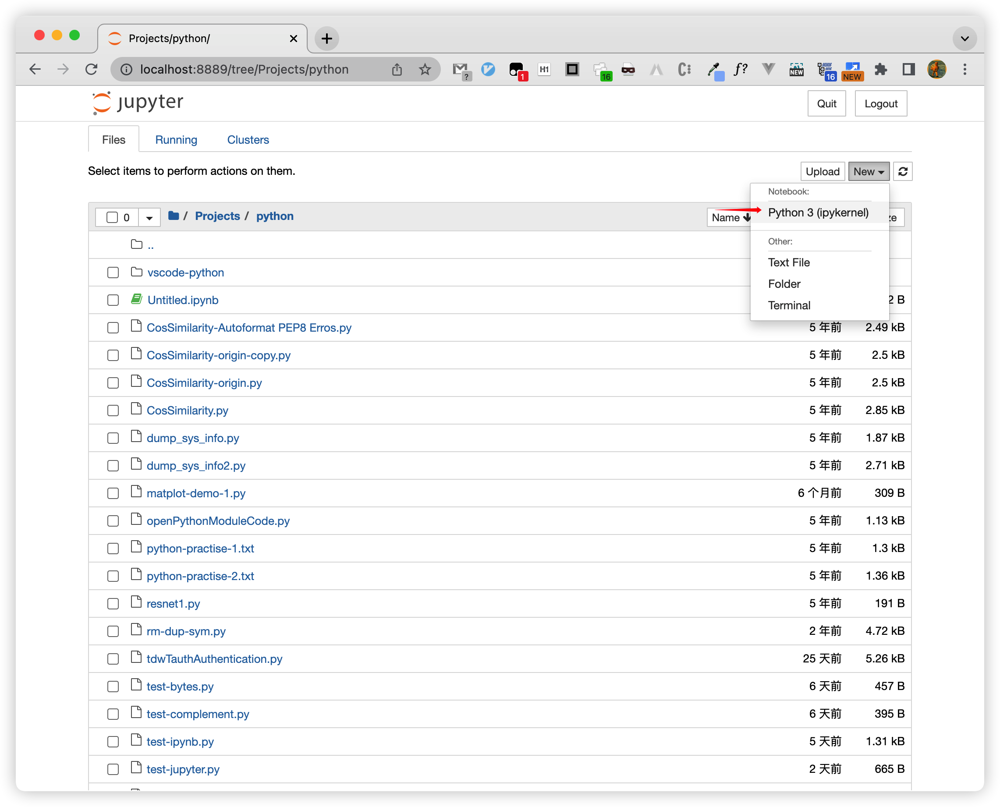
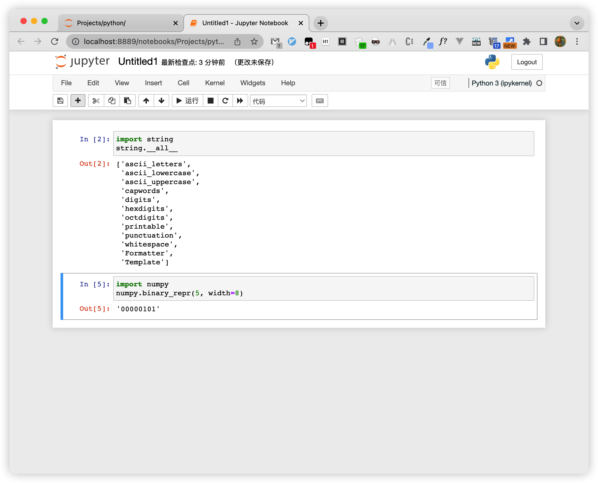

Jupyter Notebook & JupyterLab
Jupyter Notebook & JupyterLab 简介。
Jupyter Notebook#
Jupyter Notebook: The Classic Notebook Interface
The Jupyter Notebook is the original web application for creating and sharing computational documents. It offers a simple, streamlined, document-centric experience.
Jupyter Notebook 相当于在浏览器中完成python编程任务，不仅可以写代码、做笔记，而且还可以得到每一步的执行结果，效果非常好。
自从Jupyter Notebook 1.0发布以来，越来越多科学家、研究者、教师使用IPython Notebook处理数据、写研究报告、甚至编写书籍。
推荐使用 Anaconda，自带了 Numpy、Scipy、Matplotlib 等多种 python 开发包和 Jupyter Notebook！
jupyter notebook安装与配置
Python Jupyter Notebook各种使用方法记录
python环境搭建以及jupyter notebook的安装和启动
launch#
在 Anaconda Navigator 中点击启动 Jupyter Notebook 会开一个终端Terminal并启动 python webServer。
$ /usr/local/anaconda3/bin/jupyter_mac.command ; exit;
[I 2022-06-03 10:17:13.200 LabApp] JupyterLab extension loaded from /usr/local/anaconda3/lib/python3.9/site-packages/jupyterlab
[I 2022-06-03 10:17:13.200 LabApp] JupyterLab application directory is /usr/local/anaconda3/share/jupyter/lab
[I 10:17:13.206 NotebookApp] Serving notebooks from local directory: /Users/faner
[I 10:17:13.206 NotebookApp] Jupyter Notebook 6.4.5 is running at:
[I 10:17:13.206 NotebookApp] http://localhost:8888/?token=b4f7fcc120abf0c978c105a14aa675b4f9326000da7519f4
[I 10:17:13.206 NotebookApp] or http://127.0.0.1:8888/?token=b4f7fcc120abf0c978c105a14aa675b4f9326000da7519f4
[I 10:17:13.207 NotebookApp] Use Control-C to stop this server and shut down all kernels (twice to skip confirmation).
[C 10:17:13.220 NotebookApp]
将会在默认浏览器中打开 http://localhost:8890/tree 。
usage#
New | Notebook - Python 3 (ipykernel)，将新建一个 Notebook Tab页面：

在打开的 Jupyter Notebook 中的单元格中输入 Python 代码，按下 control+command（^⌘）快捷键即可执行：

按下组合键 shift+command（⇧⌘）将在执行当前单元格后，在下面新开一个Cell并聚焦输入。
点击 ➕ 可在下面插入新单元格。
nbextensions#
# 安装对应所需模块
pip install jupyter_contrib_nbextensions
# 启用用户配置
jupyter contrib nbextension install --user
pip install jupyter_contrib_nbextensions
jupyter contrib nbextension install --user
pip install jupyter_nbextensions_configurator
jupyter nbextensions_configurator enable --user
配置之后重启jupyter，后面多出来一项菜单 Nbextensions，点开勾选上 Codefolding（折叠代码块）和 Hinterland（代码自动补全）即可。
import/run across cells#
当有多个Cell时，由于每个Cell都是可以独立执行，可能会import导入重复的模块。
可考虑将第一个 Cell 专用作 import Cell，后面其他 Cell 所需的模块都集中在此 import。
每当第一个 Cell 导入了新模块后，重新运行该 Cell 导入更新生效，后续就无需重复导入了。
运行过的Cell代码，已经导入到同一上下文中，因此可以执行跨Cell相互调用（类/函数），或在一个Cell中为其他Cell编写单元测试。
JupyterLab#
JupyterLab: A Next-Generation Notebook Interface
JupyterLab is the latest web-based interactive development environment for notebooks, code, and data. Its flexible interface allows users to configure and arrange workflows in data science, scientific computing, computational journalism, and machine learning. A modular design invites extensions to expand and enrich functionality.
docs#
jupyterlab——下一代notebook
JupyterLab——极其强大的下一代notebook！
Starting#
JupyterLab sessions always reside in a workspace.
The default workspace is the main /lab URL:
launch#
在 Anaconda Navigator 中点击启动 JupyterLab 会开一个终端Terminal并启动 python webServer。
将会在默认浏览器中打开 http://localhost:8888/lab 。
在 JupyterLab 中 New Launcher 支持创建 Notebook - Python 3 (ipykernel) 和 Console - Python 3 (ipykernel)。
还可创建 Other 文件类型。
URLs#
File Navigation with /tree#
JupyterLab's file navigation URLs adopts the nomenclature of the classic notebook; these URLs are /tree URLs:
By default, the file browser will navigate to the directory containing the requested file. This behavior can be changed with the optional file-browser-path query parameter:
Entering the above URL will show the workspace root directory instead of the /path/to/ directory in the file browser.
Managing Workspaces (UI)#
JupyterLab sessions always reside in a workspace. Workspaces contain the state of JupyterLab: the files that are currently open, the layout of the application areas and tabs, etc. When the page is refreshed, the workspace is restored.
The default workspace does not have a name and resides at the primary /lab URL:
All other workspaces have a name that is part of the URL:
Workspaces ++save their state++ on the server and can be shared between multiple users (or browsers) as long as they have access to the same server.
A workspace should only be open in a single browser tab at a time. If JupyterLab detects that a workspace is being opened multiple times simultaneously, it will prompt for a new workspace name.
Managing Workspaces (CLI)#
JupyterLab provides a command-line interface for workspace import and export:
$ jupyter lab workspaces export
$ jupyter lab workspaces export > ~/Downloads/jupyter_workspaces.json
Debugger#
Debugger — JupyterLab 4.1.2 documentation
Notebook vs. Lab#
Jupyter notebook 和 Jupyter lab 的区别
Jupyter Lab对比Jupyter Notebook有什么优点和不足？
What is the difference between Jupyter Notebook and JupyterLab?
Jupyter Notebook 是一个款以网页为基础的交互计算环境，可以创建Jupyter的文档，支持多种语言，包括Python, Julia, R等等。广泛用于数据分析，数据可视化和其他的交互和探索性计算中。
JupyterLab 是包括了Notebook的下一代用户界面。有模块化的界面，可以在同一个窗口同时打开好几个notebook或文件（HTML, TXT, Markdown等等），都以标签的形式展示，于是就更像是一个IDE。
建议使用 JupyterLab 或者 vscode + Jupyter Notebook。
JetBrains Datalore#
在 Anaconda-Navigator 启动面板中，除了 Jupyter Notebook 和 JupyterLab，还可使用 JetBrains 的 Datalore。
https://www.anaconda.com/datalore_navigator 重定向到 https://www.jetbrains.com/datalore/
个人用户点击【Start for free】->【For Yourself】->【Community Plan】，然后使用Google账号登录即可。
Datalore 相较 Jupyter Notebook 和 JupyterLab，自带的代码提示比较强大！
How to Get the Best Autocomplete in Jupyter Notebooks and More